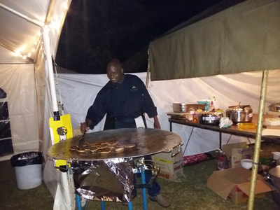
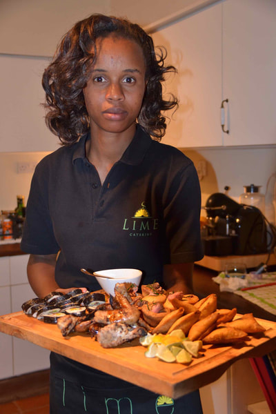
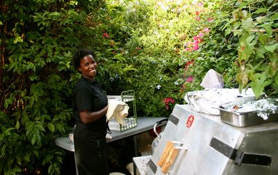
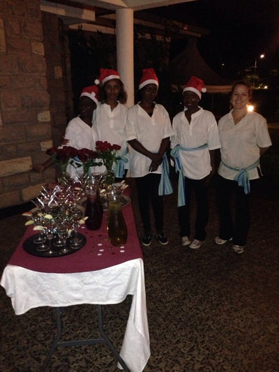
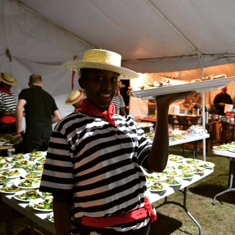
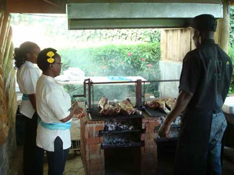

At Mwembe Tayari Catering we pride ourselves in providing a fresh experience in catering in Kenya.
Our menus are vibrant, contemporary and creative. Our classically trained chefs are continuously using their culinary imagination and inventing new delicious dishes.
In addition to unique event catering and mobile bar services we offer a healthy, distinctive and affordable range of 'ready meals', a wide range of home made cakes, biscuits, preserves.
We use the best ingredients and develop our personalised menus in order to offer outstanding services
The following selections are available as plated breakfast service or buffet service. All selections include juice and coffee
Choose from eggs, bacon and cheese or eggs, roasted vegetables and cheese; accompanied by sausage links or bacon and Lyonnaise potatoes.
All sandwiches served with pasta or potato salad and gourmet chips Make any sandwich a box lunch with a cookie 3.00 Box lunch will include: sandwich, chips, apple, cookie, cutlery, napkin and condiment
Any number of menu arrangements are possible based on your groups’ specific tastes and interests. Listed below are some of the most popular. All entrees include disposable serving ware and paper products. All prices are per person.
Six or eight ounce hand carved filet of beef topped with gourmet mushroom demi‐glace, served with choice of starch and vegetable.
Here are some pictures of our esteemed staff
     We value your money and assure you of the best services.